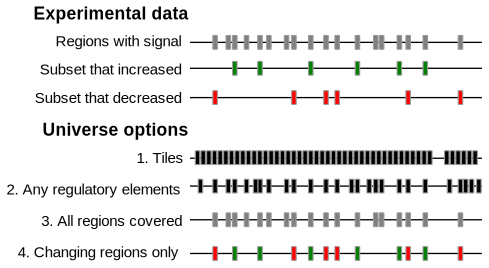

Universes
What universe should I choose?
One of the key questions when you run LOLA is what your background set, or "universe" is. The universe is a bit open-ended, and it's reasonable to try a few different things. Changing the universe isn't right or wrong, it just changes the question you are asking. The universe set is tested for overlap with the database, and the counts are used in the contingency tables that determine significance for your user sets. The reason this is important is that if you have some regions which were never really possible to end up in a region set of interest, it's unfair to penalize your regions for not overlapping those regions in the database, changing the results of the significance test.

Let's imagine you've done an experiment where you're testing how some epigenomic signal (say, H3K27ac or DNA methylation) responds to a perturbation. You end up with a set of genomic regions that were covered by your assay, along with two subsets of interest: those that increased, and those that decreased in signal (see figure).
In this case, one approach is to think of this as two user query sets: one for each subset of regions that change. Now, what should your universe be? Well, you have a few options. Let's go through 4 common universe choices see what they mean about the significance test you're performing. The four choices move in increasing order of specificity:
Choice 1: genome tiles. LOLAweb lets you choose tiling regions of various sizes. These tiles are little better than generic splits of the genome because they at least account for reference assembly gaps. But otherwise, this is a pretty basic background set which doesn't restrict the question at all. This would be a useful universe to choose if you are not sure what to expect, and your experiment could have included any genomic region as output. The result will tell you what database region sets are enriched in your query sets generally, across the whole genome.
Choice 2: any regulatory elements. A bit more restricted universe set is the set of active regulatory elements. LOLAweb includes a manually curated universe set that was derived by merging all of the DNAse hypersensitivity data from over 100 cell types from the ENCODE project. This set will restrict your significance test to only active regulatory elements, so it's a reasonable background set if you're looking at ChIP-seq data or some other active signal, but may not be relevant for every experiment type. In practice, we find this to be a useful first pass test for many experiments. Relative to the tiling approach, this, for example, won't penalize your overlap test for not overlapping a database region that's hidden away in a heterochromatic region. It yields which database region sets are enriched in your query set, but only considering active parts of the genome. An advantage of this approach is that it's easy: we've already defined that set for you and you can just select it. A disadvantage is that you're restricted to elements that were covered in the considered cell types (although, offsetting that is the point that really specialized stuff is less likely to be in the database, anyway).
Choice 3: all regions covered. Probably a better choice (though requiring a bit more work) is to derive the universe from your actual data. The natural choice would be to use the set of regions your experiment actually covered. You can think of this universe as the set of regions you tested for possible inclusion in your user sets; or, in other words, it is the restricted background set of regions that were tested, including everything in your regions of interest as well as those that were tested but did not get included. If you can easily come up with such a test for your problem, this is a really good choice for background universe. The resulting test will give you overlaps with database regions without penalizing for areas that weren't even covered in your experiment anyway. This asks: what's special about my regions that increased, versus all the regions that didn't?
Choice 4: changing regions only Finally, you could make a very restrictive universe by just combining your two region sets of interest. In this case, it would be the set of regions that either increased or decreased. The result of this test will give you the enrichment of the increased regions relative to changing regions. This is a subtly different question to ask than using the set of all covered regions (choice 3). The LOLA R package provides an easy way to do this with the buildRestrictedUniverse function, and you can accomplish the same thing with the radio button on LOLAweb. It assumes that we're only interested in regions that change, then we ask the question: what's special about the ones that increased?
In the case of DNA methylation: all regions that had reasonable coverage of methylation reads are your universe, and those that were either highly methylated or lowly methylated (or differentially methylated) would be your subsets of interest. It's the set including all genes that had enough reads that they could have been differentially methylated, even if they weren't.